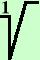
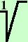

a13 = a13 =
per le proprieta' inverse delle potenze posso pensare
a13 come
a10·a3
In questo modo la prima potenza sara' un
multiplo dell'indice di radice
= a10·a3 =
Ora spezzo la radice in due parti in modo che la prima potenza
sia da sola dentro la radice (posso farlo per come ho definito
il prodotto fra radicali)
= a10·a3 =
Per la regola di equivalenza posso semplificare l'indice di radice e
l'esponente del radicando nel primo radicale
divido per 5
 a10 =
a2 = a2 a10 =
a2 = a2
quindi il risultato e'
=
a2a3
|